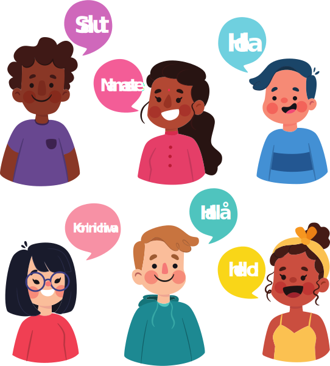

<section class="who" id="who">
  <div class="who__container container">
    <h2 class="who__title">Кому будет полезен проект «ХОЧУГОВОРИТЬ» :</h2>
    <ul class="list-reset who__list">
      <li class="who__item">
        <div class="who__item-image">
          
        </div>
        <p class="who__text">Если твоя стихия - сфера продаж, обслуживания, консультирования. Для легких переговоров, быстрых продаж и сделок.
        Заинтересовать клиента, быть эффектнее в конкурентной среде.</p>
      </li>
      <li class="who__item">
        <div class="who__item-image">
          
        </div>
        <p class="who__text">Если ты управленец, собственник бизнеса, общественный деятель. Рассказывать о себе, своем деле перед большой аудиторией.
        Прокачать свои проекты, бизнес и, конечно, себя самого.</p>
      </li>
      <li class="who__item">
        <div class="who__item-image">
          
        </div>
        <p class="who__text">Если ты блогер (не обязательно начинающий), тебя вдохновляет работа в интернет-проектах. Мастер-классы помогут легко и
        просто общаться с аудиторией через камеру, убрать все зажимы и страхи.</p>
      </li>
      <li class="who__item">
        <div class="who__item-image">
          
        </div>
        <p class="who__text">Если тебе просто хочется легче находить общий язык с людьми, узнать себя с иной стороны, орудовать словом, быть
        интересным.</p>
      </li>
    </ul>
  </div>

</section>
